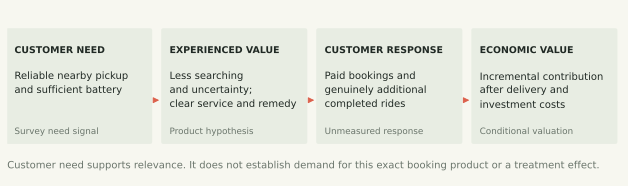
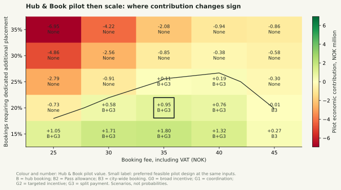
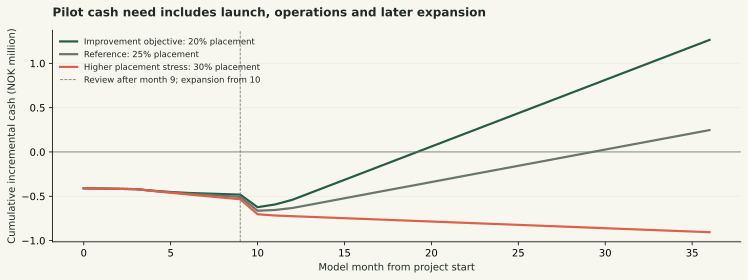

VOI / PORTFOLIO LAB 7.2.0
Named report case: pilot then conditional expansion. Frozen 2026-10-30. Estimated Oslo scale: 124,822 active customers.
Strategic priority and economic ranking are separate. Hub & Book first is the report's proposed strategic priority. The catalogue ranking remains a separate conditional economic comparison; this pack does not force booking to rank first.
Proposed target: NOK 0.90m over 36 months and discounted economic payback by month 24. These are management proposals, not documented Voi hurdles.
| Pilot then scale | Placement | Economic value | Payback | Peak cash |
|---|---|---|---|---|
| Improvement objective | 20% | +NOK 0.95m | Month 21 | NOK 623,353 |
| Reference | 25% | +NOK 0.11m | Month 33 | NOK 663,342 |
| Higher placement stress | 30% | -NOK 0.85m | Not within 36 months | NOK 905,782 |
The improvement case meets both proposed targets under current assumptions. The reference case does not meet them. Funding status: Funding ceiling unspecified.

| Assumption | Entered value | Argument and next evidence |
|---|---|---|
| Hub concentration | 20% additional placement; 40% eligible reach | Select approved hubs and time windows with existing usable supply. Reduced placement must be achievable without simply losing customers. Measure geocoded requests, failed searches and incremental crew jobs. |
| Service reliability | 95% fulfilment | Verify a usable, sufficiently charged vehicle at the promised location and time. Record failures and remedies; measure reliability jointly with placement and reach. |
| Price and response | NOK 35 fee; 8 bookings per adopter/month | A convenience need does not establish willingness to pay. Test fee conversion and repeat booking among eligible customers; include non-users in the economic evaluation. |
| Demand response | 15% frequent / 30% subscriber adoption at the entered fee | Adoption is price-adjusted from a reference fee; both rates and the response coefficient remain assumptions. Record conversion at tested prices and compare assigned cohorts. |
| Scale and unit economics | 124,822 estimated active customers; 23.06 net NOK/ride | Oslo scale and revenue allocation are constructed estimates. The survey is not representative. Validate city customer counts, segment reach and marginal costs before committing to scale. |
| Internal resource cost | 100% of internal office-hour cost treated as new cash | Keep the full economic opportunity cost. Finance must distinguish hiring, contractor or replacement cash expenditure from existing salaried capacity. |
| Investment | Pilot value | Commercial value | Pilot peak cash | Pilot payback |
|---|---|---|---|---|
| No investment | NOK 0.00m | NOK 0.00m | NOK 0 | - |
| Hub & Book | +NOK 0.95m | +NOK 1.41m | NOK 623,353 | Month 21 |
| Voi Together | -NOK 0.13m | -NOK 0.02m | NOK 375,000 | Not within 36 months |
| Both current designs | +NOK 0.97m | +NOK 1.54m | NOK 930,050 | Month 24 |
The commercial catalogue prefers Hub paid booking + coordination + split payment at +NOK 1.72m. Its pilot path gives +NOK 1.07m. The proposed booking-first priority must be defended through customer value, capital and organizational delivery; it is not imposed on the ranking.
| Candidate | 5th percentile | Median | 95th percentile | Share below zero |
|---|---|---|---|---|
| No investment | NOK 0.00m | NOK 0.00m | NOK 0.00m | 0.0% |
| Hub paid booking + coordination + split payment | -NOK 1.61m | +NOK 0.26m | +NOK 2.60m | 41.6% |
| Hub & Book | -NOK 1.57m | +NOK 0.20m | +NOK 2.49m | 43.0% |
| Voi Together | -NOK 0.47m | -NOK 0.23m | +NOK 0.23m | 82.0% |
| Both current designs | -NOK 1.69m | +NOK 0.15m | +NOK 2.48m | 44.6% |
Assumed distributions and dependencies; shares of tested combinations, not probabilities of business success. Changed ranges are not new product evidence.


Expansion begins in month 10 after the month-9 review. Economic resource costs and actual cash are separate. Internal-office cash share is 100%.
| Section | Use |
|---|---|
| Executive Summary | State Hub & Book first, pilot then conditional expansion; identify the principal economic dependency. |
| Situation Analysis | Use the needs-based segment and reliability gap; distinguish survey description from market estimates. |
| Financial Goals | Propose at least NOK 0.90m economic contribution and discounted payback by month 24; compare against the frozen scenarios. |
| Strategic Initiatives and Priorities | Specify the hub service, eligibility, price, operational promise and why Together is deferred or retained as an alternative. |
| Budget | Separate economic resource cost, actual cash launch needs, later capacity and peak cash. Funding remains conditional on an entered ceiling. |
| Implementation and Control | Assign owners; measure contribution per assigned customer and reliability; review at the gate, and refresh the investment appraisal. |
| Input | Value | Status | Source identifiers | Scope |
|---|---|---|---|---|
| Horizon | 36 | assumed | Finite horizon. The value of customers gained or retained after it is shown separately as run-off and is not in the ranking. | |
| Run-off: months the extra customers are followed after the horizon | 84 | assumed | Shown beside the within-horizon value, not in the ranking. Offers stop at the horizon with no shutdown cost; customers then follow baseline transitions and the same discount rate. | |
| Tie band: smallest difference treated as a real ranking difference | 50000 | assumed | Planning choice, not an estimate. Candidates closer than this (to each other, or to zero) are reported as not distinguished by the model. 50,000 kr is about 7% of the best default value. | |
| Estimate active customers from the Oslo market | True | assumed | On (planning case): active customers = Voi Oslo trips (Ruter 2025 e-scooter trips × Voi share) ÷ 12 ÷ rides per active customer. Off: use the named cohort below. Revenue per ride is a separate setting (revenue basis). 2024 inputs (11.2m trips, 36.6% share, EUR 13.2m) give about 70,700 customers and are an alternative historical scale stress. | |
| Named starting cohort: active customers | 10000 | assumed | Used when market estimation is off. 10,000 is a pilot-cohort scenario with no source; at base behaviour it is below the minimum operating scale of every candidate that has one (city-wide booking and the Pass allowance are negative at every scale tested). Setup, monthly organizational costs and logistics capacity stay as entered. Baseline replacement inflow is maintained: this is a bounded operating portfolio, not a closed attrition-only cohort. | |
| Discount rate (annual) | 0.1 | assumed | Cost-of-capital proxy for a growth-stage operator. | |
| Voi Norway net revenue 2025 | 19 | observed | voiAR25 | Note 2: 19.0 (13.2 in 2024). |
| NOK per EUR (2025 average) | 11.7173 | observed | ecb | Scenario parameter; not a measured causal effect. |
| Oslo share of Voi Norway revenue | 0.75 | derived | voiPR0211, voiPR0314 | Sets revenue per ride whenever the revenue basis is the Oslo market allocation (the v7.1 planning case), whether active customers are estimated or entered. Not observed; compare the conditional equal-group-revenue-per-trip check without treating it as a measured city share. Drawn from 0.60–0.85 in the uncertainty analysis since v7.1, because it now sets revenue per ride (18.4–26.1 kr). |
| Oslo rental e-scooter trips 2025 | 20.4 | observed | ruter25 | 20.4m in 2025 (11.2m in 2024), all operators. |
| Voi share of Oslo trips | 0.355 | derived | voiPR0314 | An analyst-selected 35.5%, between Voi’s 2024 trip share (4.1m of 11.2m = 36.6%) and its 2025 fleet share (5,334 of 16,000 = 33.3%). The 2025 trip share is not reported. |
| Vehicle operating cost per ride | 7.67 | derived | voiAR25, voiQ125 | (Revenue − vehicle profit) / rides, 2025. An average, not a marginal cost. |
| Pass monthly price assumption (incl. VAT) | 399 | assumed | tek, voiPricing | 399 kr is a historical 2024 benchmark used as a scenario input. It is not a verified current Oslo price. Voi directs customers to the app for city-specific prices; replace this assumption with a dated in-app observation when available. |
| VAT on e-scooter rental | 0.25 | observed | vat, vatRates | Skatteetaten classifies vehicle rental without a driver at the ordinary rate, currently 25% (checked 21 Oct 2026). The model applies that rental classification to the Pass and related booking fees and credits; reported Voi revenue is already net of VAT. Treatment of any proposed service is a model application of the rule, not an individual ruling. |
| Office labour cost per hour | 545.05 | derived | voiAR25 | Voi personnel cost per average employee / about 1,650 hours. Used for build and running hours. |
| Field operations cost per hour | 400 | derived | ssb | SSB 2025: stock, freight and van workers 262–309 kr/h × about 1.29 employer costs, plus night supplement. |
| Launch investment budget | 750000 | assumed | Illustrative sponsor allocation, not specified by the assignment. Shown as a flag: candidates above it stay eligible and are marked. Tested against launch investment on the commercial basis, including scale-up bought at launch. | |
| Card and payment fees on extra revenue | 0.025 | assumed | Typical Nordic acquiring cost, applied only to incremental revenue. | |
| Product maintenance a year (share of setup) | 0.15 | assumed | Keeps the features running from launch; avoidable if an offer stops. | |
| Seasonal swing in ride volume | 0 | assumed | toi1748 | Explicit scenario, not fitted seasonality. The 40% seasonal case is an analogue-informed stress, not a Voi estimate. |
| Peak month of the season | 10 | assumed | Model month 1 is October 2026, so 10 is July 2027. | |
| Convenience Seekers share (scenario weight) | 0.3056 | assumed | survey | 22 of 72 (QCL_4 = 3). A sample share, not a market share. Applying this sample fraction to a customer portfolio is an assumption. Alternative weights, such as the provisional five-cluster solution, are not built in; test them by editing the shares. Applied to the operating cohort as an assumed mix. Sample membership does not establish the market or pilot population share. |
| Social Leisure Seekers share (scenario weight) | 0.2917 | assumed | survey | 21 of 72 (QCL_4 = 1). Applying this sample fraction to a customer portfolio is an assumption. Alternative weights, such as the provisional five-cluster solution, are not built in; test them by editing the shares. Applied to the operating cohort as an assumed mix. Sample membership does not establish the market or pilot population share. |
| Cautious Riders share (scenario weight) | 0.2083 | assumed | survey | 15 of 72 (QCL_4 = 2). Applying this sample fraction to a customer portfolio is an assumption. Alternative weights, such as the provisional five-cluster solution, are not built in; test them by editing the shares. Applied to the operating cohort as an assumed mix. Sample membership does not establish the market or pilot population share. |
| Transport Connectors share (scenario weight) | 0.1944 | assumed | survey | 14 of 72 (QCL_4 = 4). Applying this sample fraction to a customer portfolio is an assumption. Alternative weights, such as the provisional five-cluster solution, are not built in; test them by editing the shares. Applied to the operating cohort as an assumed mix. Sample membership does not establish the market or pilot population share. |
| Calibrate segment engagement to survey usage | True | observed | survey | Scales upward moves per segment so that its share of frequent riders and subscribers matches its share of weekly users, shrunk toward the pooled share. |
| CS: users riding weekly or more | 0.5455 | observed | survey | 12 of 22 (Q1). |
| SLS: users riding weekly or more | 0.25 | observed | survey | 5 of 20 users. |
| CR: users riding weekly or more | 0 | observed | survey | 0 of 13 users. |
| TC: users riding weekly or more | 0.3077 | observed | survey | 4 of 13 users. |
| All users riding weekly or more | 0.3088 | observed | survey, toi1748, voiSurvey25 | 21 of 68. TØI 2019: 42% (Nov) to 70% (summer); Voi 2025: about half. |
| Shrinkage toward the pooled share | 0.5 | assumed | Clusters have 13–22 users; 50% guards against over-reading small cells. | |
| Alternative: scale upgrades by Q24 subscription interest | False | observed | survey | Stated interest, not purchase probability. Off by default. |
| Rides a month: Occasional rider | 1.3 | derived | survey | Survey users below weekly, Q1 band midpoints. |
| Rides a month: Frequent rider | 12 | derived | survey, lime | Weekly-plus riders without a Pass: 12.1. |
| Rides a month: Subscriber (Voi Pass) | 15 | derived | survey | Current subscribers: 15.2 (n=6). |
| Occasional → Frequent | 0.05 | assumed | survey, lime | Baseline transition is assumed. Cross-sectional usage cannot identify monthly transitions. |
| Occasional → Subscriber | 0.01 | assumed | Scenario parameter; not a measured causal effect. | |
| Occasional → Inactive | 0.1 | assumed | cambe | Assumed 10% a month. No operator-specific cohort retention estimate was supplied for this project. |
| Frequent → Occasional | 0.12 | assumed | toi1748 | Scenario parameter; not a measured causal effect. |
| Frequent → Subscriber | 0.02 | assumed | Scenario parameter; not a measured causal effect. | |
| Frequent → Inactive | 0.05 | assumed | Scenario parameter; not a measured causal effect. | |
| Subscriber → Occasional | 0.02 | assumed | Scenario parameter; not a measured causal effect. | |
| Subscriber → Frequent | 0.07 | assumed | Scenario parameter; not a measured causal effect. | |
| Subscriber → Inactive | 0.035 | assumed | survey | Assumed 3.5% a month (about 35% a year). Survey Q23: 5 of 11 respondents who have ever had a Pass no longer have one. That shows subscribers do leave, but without an observation period it cannot give a monthly rate. |
| Inactive → Occasional (win-back) | 0.04 | assumed | Scenario parameter; not a measured causal effect. | |
| Inactive → gone for good | 0.05 | assumed | Scenario parameter; not a measured causal effect. | |
| Use the city-wide footprint | False | assumed | Selects the separate city-wide reach and placement assumptions. Changing the footprint does not change the fee, demand response, fulfilment or logistics capacity. | |
| Hub footprint: eligible Convenience Seekers | 0.4 | assumed | survey | Scenario parameter; not a measured causal effect. |
| City-wide footprint: eligible Convenience Seekers | 0.8 | assumed | 80% is an illustrative reach assumption, not a survey estimate. City-wide remains focused on CS; it does not automatically acquire other segments. Test reach independently from the fee and placement need. | |
| City-wide footprint: bookings requiring placement | 0.5 | assumed | 50% is an analyst scenario. The matched-price table exposes it next to the separate hub assumption. No observed Oslo placement fraction establishes this value. | |
| Eligible frequent riders who book | 0.25 | assumed | Of eligible frequent riders without a Pass, the share who book in a given month. | |
| Eligible subscribers who book | 0.5 | assumed | Scenario parameter; not a measured causal effect. | |
| Bookings per booking customer | 8 | assumed | Eight is about two commute days a week. | |
| Bookings included in Voi Pass | 0 | assumed | The upgrade incentive scales with the share of bookings the Pass covers; every included booking still costs a placement. Pass holders respond to the average fee they pay per booking (nothing within the allowance). The Pass price is a calibration input, so the allowance is not a priced tier. Under the linear response, a booking that costs a Pass holder nothing doubles their reference adoption (fee 0 is a 100% cut from the 25 kr anchor), so allowances beyond about 2 a month lie outside the response’s local range. | |
| Booking fee (incl. VAT) | 35 | assumed | competitors | Set at 35 kr: at 25 kr a booking costs more to place and hold than it earns. The adoption inputs describe demand at the 25 kr reference fee; at 35 kr the default price response (elasticity 1) lowers adoption by 40%. The price table under Stress Test shows other responses. Benchmarks: Voi’s free-unlock add-on 29 kr a month; Dott and Lime offer 10–15 minute holds free (non-Oslo analogues: the Oslo permits are held by Voi, Ryde and Bolt). |
| Demand response to the fee | 1 | assumed | Unestimated planning coefficient. Default 1; sensitivity range 0–2 is a scenario range, not an empirical confidence interval. | |
| Use bounded logit price response | False | assumed | Alternative unestimated demand structure. Linear and logit share adoption at the reference fee and the same local price elasticity there. Logit(p) = logit(p0) − elasticity × (fee − reference) / reference / (1 − p0), for 0 < p0 < 1. Price-response envelopes and the assumption challenge test both forms. Train (2009), chapter 3, motivates the probability form, not its Voi parameter values. | |
| Fee at which adoption is estimated | 25 | assumed | Behavioural anchor, not a design choice: the price at which the adoption or initiation inputs are argued. Keep it fixed when comparing designs. | |
| Bookings fulfilled on time | 0.95 | assumed | Scooter present and charged at the booked time. | |
| No-shows | 0.12 | analogue | noshow | Scenario parameter; not a measured causal effect. |
| Credit per failed booking (incl. VAT) | 20 | assumed | Scenario parameter; not a measured causal effect. | |
| Hub footprint: bookings requiring placement | 0.2 | assumed | toi1748 | Hub bookings where a scooter must be moved overnight; the rest are met by holding one already nearby. |
| Minutes per placement | 8 | analogue | raviv, liu | Field time to move and park one scooter: about 1 minute of handling plus a 1–3 km detour at about 20 km/h. |
| Vehicle cost per placement | 20 | assumed | liu, osorio | Planning allowance of 20 NOK for vehicle costs beyond field labour. Not estimated from Oslo crew logs. Published charging and routing studies support including transport costs, but do not establish this amount. |
| Held scooters that would have been ridden by someone else | 0.05 | assumed | A held scooter is unavailable to other riders; this share of holds costs one lost ride each. | |
| Placements a month the current night crews can absorb | 3000 | assumed | Beyond this, extra shifts are needed. | |
| Extra cost of placements beyond capacity | 0.5 | assumed | Night shift and overtime supplement. | |
| Support cost per booking | 0.5 | assumed | Scenario parameter; not a measured causal effect. | |
| Booked rides that are extra rides | 0.25 | assumed | kabra, shah | Of rides taken on a booked scooter, the share that would not have happened on Voi without the booking. |
| Extra upgrades to Voi Pass per booking customer | 0 | assumed | Applies in proportion to the bookings the Pass includes; zero for a paid add-on. | |
| Non-booker lapse reduction per unit placement exposure | 0 | assumed | kabra | Assumed absolute monthly effect, capped at baseline lapse and weighted by actual booking-driven placements / initial CS+TC customers. Zero placements gives zero spillover. |
| Months to full adoption after launch | 4 | assumed | Scenario parameter; not a measured causal effect. | |
| Social occasions per SLS customer | 0.6 | assumed | survey | Scenario parameter; not a measured causal effect. |
| Occasions that fit the 22:00 window | 0.7 | assumed | Scenario parameter; not a measured causal effect. | |
| Occasions where a group is started | 0.06 | assumed | Of eligible social occasions, the share where someone starts a group in Voi Together. | |
| Chance all scooters are at the meeting point | 0.75 | assumed | Scenario parameter; not a measured causal effect. | |
| Highest availability the fleet can supply | 0.95 | assumed | A ceiling: the hold and Hub & Book cannot push availability above what the local fleet can supply at one point. | |
| Feature: short group hold at the meeting point | True | assumed | Raises availability; unused holds block individual rides. | |
| Availability gain from the group hold | 0.15 | assumed | Scenario parameter; not a measured causal effect. | |
| Group holds that go unused | 0.15 | analogue | noshow | Scenario parameter; not a measured causal effect. |
| Chance an unused hold blocks another ride | 0.1 | assumed | Scenario parameter; not a measured causal effect. | |
| Maximum group availability lift in hub zones | 0.05 | assumed | Independent assumed supply benefit from running the funded hub programme. Weighted by geographic overlap and delivered rollout; it is not a measured causal effect of making a booking. | |
| Groups that complete once scooters are there | 0.9 | assumed | Of groups with scooters available, the share where everyone actually rides. | |
| Scooters per group | 3 | assumed | voiTerms | Group Rides supports up to five vehicles. |
| Feature: split payment between accounts | False | assumed | Every guest pays and registers; new guests add friction. | |
| Completion lost when new guests must register | 0.25 | assumed | Scenario parameter; not a measured causal effect. | |
| Extra payment cost per guest (split) | 1 | assumed | Scenario parameter; not a measured causal effect. | |
| Occasions offered the group incentive | 0.5 | assumed | The incentive applies only at suitable places and times, not as a permanent discount. | |
| Group incentive on targeted occasions | 0.15 | assumed | survey | Discount on the normal price for group trips on targeted occasions. |
| Demand response to the incentive | 2 | assumed | Unestimated planning coefficient. Default 2; range 0–4. Zero-response case is compared explicitly. | |
| Incentive at which starts are estimated | 0.15 | assumed | Behavioural anchor, not a design choice: the price at which the adoption or initiation inputs are argued. Keep it fixed when comparing designs. | |
| Group trips that are additional | 0.47 | assumed | Ut sammen aims at trips out to an activity, 17–22, where the alternative is a shared taxi, the tram or not going. Assumed 47% (40% for the core offer); not measured. | |
| Guests new to Voi | 0.35 | assumed | Scenario parameter; not a measured causal effect. | |
| New guests seen for the first time | 0.7 | assumed | Removes repeat appearances: a friend who joins three groups is counted once. | |
| New guests who register (host pays) | 0.25 | assumed | Scenario parameter; not a measured causal effect. | |
| Registered guests who take a first paid ride | 0.5 | assumed | Only guests who then pay for a ride of their own enter the portfolio as Occasional riders; registration alone earns nothing. | |
| Guests who ride again after a split-payment trip | 0.3 | assumed | With split payment every guest already has an account and has paid once, so fewer of them are genuinely new riders. | |
| Groups per host | 1.3 | assumed | Retention and repeat-use effects apply once per host, not once per group. | |
| Hosts who start riding weekly | 0 | assumed | Scenario parameter; not a measured causal effect. | |
| Feature: join by link without the app | True | assumed | Guests open the invitation in the browser and check in to the group; only the host needs the app. | |
| More groups started when guests can join by link | 0.25 | assumed | 25% means 6.0% of occasions become 7.5%. The share of groups abandoned because a friend lacks the app is not measured. | |
| Feature: incentive only where it changes behaviour | False | assumed | ascarza18 | Uplift targeting: the incentive goes to occasions where a test shows it gets more groups started. |
| Incentive kept away from trips that would happen anyway | 0.5 | assumed | ascarza18 | Scenario parameter; not a measured causal effect. |
| Feature: first ride free for new guests | False | assumed | schmitt11 | After a group trip, a new guest gets their first own ride free. |
| Extra guests who take a ride of their own with the credit | 0.15 | assumed | schmitt11 | Percentage points added to guest activation. Costs one ride’s net revenue per activated guest. |
| Feature: event and venue partners | False | assumed | Venues and events that end before 22:00 pay Voi for the groups they receive; partner duties, cost and funding are explicit. | |
| Occasions at contracted partner venues or events | 0.1 | assumed | A planning target of 10% if partners are added (a handful of venues and events covering about one evening occasion in ten). No agreement exists, so the evidence-conservative case uses 0. | |
| More groups started at partner occasions | 1.25 | assumed | Applied only to partner-linked occasions, and capped so that no more groups start than there are occasions. | |
| Voi cost per partner trip | 10 | assumed | Variable cost of serving a partner trip (promotion, settlement). The partnership capability itself is a separate setup and running cost. | |
| Partner funding per trip | 15 | assumed | Assumed 15 kr per partner trip, paid only on trips from partner-linked occasions. No venue has agreed to it; the zero-funding stress test shows the case without it. | |
| Support cost per group trip | 3 | assumed | Scenario parameter; not a measured causal effect. | |
| Months to full adoption after launch | 3 | assumed | Scenario parameter; not a measured causal effect. | |
| Pilot coverage before the gate | 0.3 | assumed | Share of eligible customers and hubs in the pilot before the gate. After the gate the rest of the market is added on the offer’s own adoption ramp; the pilot’s control follows after the control release month. Pilot plan only: candidates are ranked on commercial rollout. | |
| Control share within the pilot | 0.5 | assumed | wedel16 | Share of pilot customers randomly not offered the service, so its effect can be measured. The retained control is pilot coverage × this share of the market and is released after the control release month. |
| Holdout kept in a direct rollout | 0 | assumed | A direct rollout offers the service to everyone eligible from launch. At 0% no comparison group is kept, so the effects are never measured against one. | |
| Gate month | 9 | assumed | The month in which each offer is continued or stopped on the pilot’s measurements. | |
| Pilot control released after month | 9 | assumed | Default: the gate month, because the base case assumes no retention effect. Keep the control to the end of the retention window (month 13 with the default timing) if the recommendation relies on a retention effect; the pilot plan then shows the value given up. | |
| Scale-up cost after the gate: Hub & Book | 150000 | assumed | More hubs, night-route capacity, analytics. Paid after a passed gate in a pilot, or at launch in a direct rollout. | |
| Scale-up cost after the gate: Voi Together | 20000 | assumed | Scenario parameter; not a measured causal effect. | |
| Shutdown cost if stopped: Hub & Book | 30000 | assumed | One-off cost of closing the offer: app change, customer messages, outstanding credits. | |
| Shutdown cost if stopped: Voi Together | 15000 | assumed | Scenario parameter; not a measured causal effect. | |
| Months until the Oslo permit ends | 6 | derived | oslo | Two-year permits with no extension; the current one began 1 April 2025. Model month 1 is October 2026, so the permit ends after month 6. |
| Length of each new permit | 24 | observed | oslo | Scenario parameter; not a measured causal effect. |
| Chance Oslo renews Voi without the offers | 0.8 | assumed | oslo, bergen | Oslo replaced incumbents in 2022, 2023 and 2024; Voi lost Bergen in 2026. |
| Renewal effect of Hub & Book (judgement) | 0 | assumed | Zero by default and never in the headline. | |
| Renewal effect of Voi Together (judgement) | 0 | assumed | Zero by default; the late-night design sets it negative. | |
| How strongly related inputs move together | 0.5 | assumed | Correlation of inputs within a group (demand, additionality, delivery, retention). 0 = independent; 0.5 = central case. | |
| Product and technology: Booking flow, hub-zone logic and credits in the app · build hours | 280 | assumed | Owner: Product lead | |
| Product and technology: Booking flow, hub-zone logic and credits in the app · external cost | 40000 | assumed | Scenario parameter; not a measured causal effect. | |
| Product and technology: Booking flow, hub-zone logic and credits in the app · ready in month | 3 | assumed | Scenario parameter; not a measured causal effect. | |
| Product and technology: Booking flow, hub-zone logic and credits in the app · running hours a month | 8 | assumed | Scenario parameter; not a measured causal effect. | |
| Fleet operations: Overnight placement inside existing night routes · build hours | 120 | assumed | Owner: Head of operations, Oslo | |
| Fleet operations: Overnight placement inside existing night routes · external cost | 0 | assumed | Scenario parameter; not a measured causal effect. | |
| Fleet operations: Overnight placement inside existing night routes · ready in month | 2 | assumed | Scenario parameter; not a measured causal effect. | |
| Fleet operations: Overnight placement inside existing night routes · running hours a month | 20 | assumed | Scenario parameter; not a measured causal effect. | |
| Analytics: Hub demand forecast, holdout design and CPE tracking · build hours | 100 | assumed | Owner: Analytics lead | |
| Analytics: Hub demand forecast, holdout design and CPE tracking · external cost | 0 | assumed | Scenario parameter; not a measured causal effect. | |
| Analytics: Hub demand forecast, holdout design and CPE tracking · ready in month | 3 | assumed | Scenario parameter; not a measured causal effect. | |
| Analytics: Hub demand forecast, holdout design and CPE tracking · running hours a month | 8 | assumed | Scenario parameter; not a measured causal effect. | |
| Commercial and public affairs: Pricing, Pass terms and commitments in the Oslo bid · build hours | 60 | assumed | Owner: Commercial manager | |
| Commercial and public affairs: Pricing, Pass terms and commitments in the Oslo bid · external cost | 10000 | assumed | Scenario parameter; not a measured causal effect. | |
| Commercial and public affairs: Pricing, Pass terms and commitments in the Oslo bid · ready in month | 1 | assumed | Scenario parameter; not a measured causal effect. | |
| Commercial and public affairs: Pricing, Pass terms and commitments in the Oslo bid · running hours a month | 2 | assumed | Scenario parameter; not a measured causal effect. | |
| Customer support: Credit and exception process for failed bookings · build hours | 40 | assumed | Owner: Support lead | |
| Customer support: Credit and exception process for failed bookings · external cost | 0 | assumed | Scenario parameter; not a measured causal effect. | |
| Customer support: Credit and exception process for failed bookings · ready in month | 3 | assumed | Scenario parameter; not a measured causal effect. | |
| Customer support: Credit and exception process for failed bookings · running hours a month | 2 | assumed | Scenario parameter; not a measured causal effect. | |
| Product and technology: Invitations, shared meeting point, nearby-vehicle view · build hours | 180 | assumed | Owner: Product lead | |
| Product and technology: Invitations, shared meeting point, nearby-vehicle view · external cost | 15000 | assumed | Scenario parameter; not a measured causal effect. | |
| Product and technology: Invitations, shared meeting point, nearby-vehicle view · ready in month | 3 | assumed | Scenario parameter; not a measured causal effect. | |
| Product and technology: Invitations, shared meeting point, nearby-vehicle view · running hours a month | 3 | assumed | Scenario parameter; not a measured causal effect. | |
| Fleet operations: Short group hold at the meeting point · build hours | 40 | assumed | Owner: Head of operations, Oslo | |
| Fleet operations: Short group hold at the meeting point · external cost | 0 | assumed | Scenario parameter; not a measured causal effect. | |
| Fleet operations: Short group hold at the meeting point · ready in month | 3 | assumed | Scenario parameter; not a measured causal effect. | |
| Fleet operations: Short group hold at the meeting point · running hours a month | 1 | assumed | Scenario parameter; not a measured causal effect. | |
| Product and technology: Split payment between guests' accounts · build hours | 80 | assumed | Owner: Product lead | |
| Product and technology: Split payment between guests' accounts · external cost | 5000 | assumed | Scenario parameter; not a measured causal effect. | |
| Product and technology: Split payment between guests' accounts · ready in month | 4 | assumed | Scenario parameter; not a measured causal effect. | |
| Product and technology: Split payment between guests' accounts · running hours a month | 1 | assumed | Scenario parameter; not a measured causal effect. | |
| Marketing and CRM: Repeat-use journey after the first group trip · build hours | 60 | assumed | Owner: CRM manager | |
| Marketing and CRM: Repeat-use journey after the first group trip · external cost | 0 | assumed | Scenario parameter; not a measured causal effect. | |
| Marketing and CRM: Repeat-use journey after the first group trip · ready in month | 3 | assumed | Scenario parameter; not a measured causal effect. | |
| Marketing and CRM: Repeat-use journey after the first group trip · running hours a month | 3 | assumed | Scenario parameter; not a measured causal effect. | |
| Partnerships: Event and venue partners: selection, funding per group and duties · build hours | 60 | assumed | Owner: Partnership manager | |
| Partnerships: Event and venue partners: selection, funding per group and duties · external cost | 10000 | assumed | Scenario parameter; not a measured causal effect. | |
| Partnerships: Event and venue partners: selection, funding per group and duties · ready in month | 3 | assumed | Scenario parameter; not a measured causal effect. | |
| Partnerships: Event and venue partners: selection, funding per group and duties · running hours a month | 2 | assumed | Scenario parameter; not a measured causal effect. | |
| Customer support: Group issues and evening safety follow-up · build hours | 30 | assumed | Owner: Support lead | |
| Customer support: Group issues and evening safety follow-up · external cost | 0 | assumed | Scenario parameter; not a measured causal effect. | |
| Customer support: Group issues and evening safety follow-up · ready in month | 3 | assumed | Scenario parameter; not a measured causal effect. | |
| Customer support: Group issues and evening safety follow-up · running hours a month | 1 | assumed | Scenario parameter; not a measured causal effect. | |
| Product and technology: Join by link without the app (web check-in for guests) · build hours | 120 | assumed | Owner: Product lead | |
| Product and technology: Join by link without the app (web check-in for guests) · external cost | 10000 | assumed | Scenario parameter; not a measured causal effect. | |
| Product and technology: Join by link without the app (web check-in for guests) · ready in month | 4 | assumed | Scenario parameter; not a measured causal effect. | |
| Product and technology: Join by link without the app (web check-in for guests) · running hours a month | 1 | assumed | Scenario parameter; not a measured causal effect. | |
| Analytics: Uplift targeting: offer the group incentive only where it changes behaviour · build hours | 80 | assumed | Owner: Analytics lead | |
| Analytics: Uplift targeting: offer the group incentive only where it changes behaviour · external cost | 0 | assumed | Scenario parameter; not a measured causal effect. | |
| Analytics: Uplift targeting: offer the group incentive only where it changes behaviour · ready in month | 4 | assumed | Scenario parameter; not a measured causal effect. | |
| Analytics: Uplift targeting: offer the group incentive only where it changes behaviour · running hours a month | 2 | assumed | Scenario parameter; not a measured causal effect. | |
| Marketing and CRM: First ride free for new guests after a group trip · build hours | 30 | assumed | Owner: CRM manager | |
| Marketing and CRM: First ride free for new guests after a group trip · external cost | 0 | assumed | Scenario parameter; not a measured causal effect. | |
| Marketing and CRM: First ride free for new guests after a group trip · ready in month | 3 | assumed | Scenario parameter; not a measured causal effect. | |
| Marketing and CRM: First ride free for new guests after a group trip · running hours a month | 1 | assumed | Scenario parameter; not a measured causal effect. | |
| Management: Sponsor, pilot owner, budget ownership and gate reviews · build hours | 60 | assumed | Owner: Country manager, Norway | |
| Management: Sponsor, pilot owner, budget ownership and gate reviews · external cost | 0 | assumed | Scenario parameter; not a measured causal effect. | |
| Management: Sponsor, pilot owner, budget ownership and gate reviews · ready in month | 1 | assumed | Scenario parameter; not a measured causal effect. | |
| Management: Sponsor, pilot owner, budget ownership and gate reviews · running hours a month | 6 | assumed | Scenario parameter; not a measured causal effect. | |
| Booking: relative lapse reduction, frequent | 0 | assumed | Relative reduction among exposed bookers/hosts, before exposure weighting. 100% removes their baseline lapse; it cannot make lapse negative. Not causally estimated. | |
| Booking: relative lapse reduction, subscriber | 0 | assumed | Relative reduction among exposed bookers/hosts, before exposure weighting. 100% removes their baseline lapse; it cannot make lapse negative. Not causally estimated. | |
| Group: relative lapse reduction, occasional | 0 | assumed | Relative reduction among exposed bookers/hosts, before exposure weighting. 100% removes their baseline lapse; it cannot make lapse negative. Not causally estimated. | |
| Group: relative lapse reduction, frequent | 0 | assumed | Relative reduction among exposed bookers/hosts, before exposure weighting. 100% removes their baseline lapse; it cannot make lapse negative. Not causally estimated. | |
| Group: relative lapse reduction, subscriber | 0 | assumed | Relative reduction among exposed bookers/hosts, before exposure weighting. 100% removes their baseline lapse; it cannot make lapse negative. Not causally estimated. | |
| Cohort blended net revenue per ride | 18.028950135992744 | derived | voiAR25 | 2025 group net revenue EUR178.2m /115.815m rides ×11.7173 NOK/EUR. Group average proxy, not observed Oslo or PAYG marginal revenue. Pass revenue is reconciled separately. |
| Revenue per ride basis | market | assumed | Market: Voi Norway revenue × assumed Oslo share ÷ Voi Oslo trips (23.06 kr in 2025). Benchmark: group net revenue per ride (18.03 kr). Independent of how active customers are set. The ordinary cost per ride (7.67 kr) is the same group average either way. | |
| Total cash funding limit (blank = unspecified) | None | assumed | Optional limit against peak cumulative cash required. Blank means affordability remains unconfirmed. | |
| Hard monthly placement capacity (optional) | None | assumed | Above this ceiling a design is operationally infeasible. The ordinary capacity input determines overtime costs; this optional field is the hard limit. | |
| Internal office work requiring additional cash | 1 | assumed | Share of priced internal office hours that requires new hiring, contracted work or replacement capacity. Default100% is the conservative funding assumption. All office hours remain an economic opportunity cost, even when this share is lower. Field placement labour remains a direct cash cost. | |
| Group occasions in the booking hub zones | 0.4 | assumed | Assumed geographic overlap of group occasions with the booking supply programme. Default40% is a planning hypothesis, not a measured market share or an inference from CS survey reach. The maximum availability lift applies only to overlapping zones and delivered rollout. Old configurations without this field retain their historical100% overlap with a migration notice. | |
| org.booking.0.area | Product and technology | assumed | Organization design allowance; validate hours, quotes, timing and accountable owner. | |
| org.booking.0.task | Booking flow, hub-zone logic and credits in the app | assumed | Organization design allowance; validate hours, quotes, timing and accountable owner. | |
| org.booking.0.owner | Product lead | assumed | Organization design allowance; validate hours, quotes, timing and accountable owner. | |
| org.booking.0.kpi | Booking completion in the app | assumed | Organization design allowance; validate hours, quotes, timing and accountable owner. | |
| org.booking.0.dep | assumed | Organization design allowance; validate hours, quotes, timing and accountable owner. | ||
| org.booking.0.current | In-app hold of a nearby scooter for a few minutes; unlock now | assumed | Organization design allowance; validate hours, quotes, timing and accountable owner. | |
| org.booking.0.limitation | No booking ahead, no hub zones, no promise that a scooter will be there | assumed | Organization design allowance; validate hours, quotes, timing and accountable owner. | |
| org.booking.1.area | Fleet operations | assumed | Organization design allowance; validate hours, quotes, timing and accountable owner. | |
| org.booking.1.task | Overnight placement inside existing night routes | assumed | Organization design allowance; validate hours, quotes, timing and accountable owner. | |
| org.booking.1.owner | Head of operations, Oslo | assumed | Organization design allowance; validate hours, quotes, timing and accountable owner. | |
| org.booking.1.kpi | Availability at the booked time | assumed | Organization design allowance; validate hours, quotes, timing and accountable owner. | |
| org.booking.1.dep | assumed | Organization design allowance; validate hours, quotes, timing and accountable owner. | ||
| org.booking.1.current | Night crews rebalance and swap batteries against a demand forecast | assumed | Organization design allowance; validate hours, quotes, timing and accountable owner. | |
| org.booking.1.limitation | Placement is not tied to individual next-morning bookings | assumed | Organization design allowance; validate hours, quotes, timing and accountable owner. | |
| org.booking.2.area | Analytics | assumed | Organization design allowance; validate hours, quotes, timing and accountable owner. | |
| org.booking.2.task | Hub demand forecast, holdout design and CPE tracking | assumed | Organization design allowance; validate hours, quotes, timing and accountable owner. | |
| org.booking.2.owner | Analytics lead | assumed | Organization design allowance; validate hours, quotes, timing and accountable owner. | |
| org.booking.2.kpi | Incremental contribution vs holdout | assumed | Organization design allowance; validate hours, quotes, timing and accountable owner. | |
| org.booking.2.dep | Booking flow | assumed | Organization design allowance; validate hours, quotes, timing and accountable owner. | |
| org.booking.2.current | Demand forecasting for rebalancing | assumed | Organization design allowance; validate hours, quotes, timing and accountable owner. | |
| org.booking.2.limitation | No randomised holdout or customer-level incrementality tracking | assumed | Organization design allowance; validate hours, quotes, timing and accountable owner. | |
| org.booking.3.area | Commercial and public affairs | assumed | Organization design allowance; validate hours, quotes, timing and accountable owner. | |
| org.booking.3.task | Pricing, Pass terms and commitments in the Oslo bid | assumed | Organization design allowance; validate hours, quotes, timing and accountable owner. | |
| org.booking.3.owner | Commercial manager | assumed | Organization design allowance; validate hours, quotes, timing and accountable owner. | |
| org.booking.3.kpi | Fee conversion; bid commitments met | assumed | Organization design allowance; validate hours, quotes, timing and accountable owner. | |
| org.booking.3.dep | assumed | Organization design allowance; validate hours, quotes, timing and accountable owner. | ||
| org.booking.3.current | Pass and pay-as-you-go price list | assumed | Organization design allowance; validate hours, quotes, timing and accountable owner. | |
| org.booking.3.limitation | No price for a guaranteed scooter; bid commitments not linked to segments | assumed | Organization design allowance; validate hours, quotes, timing and accountable owner. | |
| org.booking.4.area | Customer support | assumed | Organization design allowance; validate hours, quotes, timing and accountable owner. | |
| org.booking.4.task | Credit and exception process for failed bookings | assumed | Organization design allowance; validate hours, quotes, timing and accountable owner. | |
| org.booking.4.owner | Support lead | assumed | Organization design allowance; validate hours, quotes, timing and accountable owner. | |
| org.booking.4.kpi | Credits per 1,000 bookings | assumed | Organization design allowance; validate hours, quotes, timing and accountable owner. | |
| org.booking.4.dep | Booking flow | assumed | Organization design allowance; validate hours, quotes, timing and accountable owner. | |
| org.booking.4.current | Ride complaints and refunds handled case by case | assumed | Organization design allowance; validate hours, quotes, timing and accountable owner. | |
| org.booking.4.limitation | No standard credit when a promise is broken | assumed | Organization design allowance; validate hours, quotes, timing and accountable owner. | |
| org.group.0.area | Product and technology | assumed | Organization design allowance; validate hours, quotes, timing and accountable owner. | |
| org.group.0.task | Invitations, shared meeting point, nearby-vehicle view | assumed | Organization design allowance; validate hours, quotes, timing and accountable owner. | |
| org.group.0.owner | Product lead | assumed | Organization design allowance; validate hours, quotes, timing and accountable owner. | |
| org.group.0.kpi | Group completion rate | assumed | Organization design allowance; validate hours, quotes, timing and accountable owner. | |
| org.group.0.dep | assumed | Organization design allowance; validate hours, quotes, timing and accountable owner. | ||
| org.group.0.current | Group Rides: one account unlocks up to five scooters and pays for all | assumed | Organization design allowance; validate hours, quotes, timing and accountable owner. | |
| org.group.0.limitation | No invitations, shared meeting point or nearby-scooter view for guests | assumed | Organization design allowance; validate hours, quotes, timing and accountable owner. | |
| org.group.1.area | Fleet operations | assumed | Organization design allowance; validate hours, quotes, timing and accountable owner. | |
| org.group.1.task | Short group hold at the meeting point | assumed | Organization design allowance; validate hours, quotes, timing and accountable owner. | |
| org.group.1.owner | Head of operations, Oslo | assumed | Organization design allowance; validate hours, quotes, timing and accountable owner. | |
| org.group.1.kpi | Availability at intended departure | assumed | Organization design allowance; validate hours, quotes, timing and accountable owner. | |
| org.group.1.dep | Invitations | assumed | Organization design allowance; validate hours, quotes, timing and accountable owner. | |
| org.group.1.feature | reserve | assumed | Organization design allowance; validate hours, quotes, timing and accountable owner. | |
| org.group.1.current | Individual hold of one scooter | assumed | Organization design allowance; validate hours, quotes, timing and accountable owner. | |
| org.group.1.limitation | No hold for several scooters at one meeting point | assumed | Organization design allowance; validate hours, quotes, timing and accountable owner. | |
| org.group.2.area | Product and technology | assumed | Organization design allowance; validate hours, quotes, timing and accountable owner. | |
| org.group.2.task | Split payment between guests' accounts | assumed | Organization design allowance; validate hours, quotes, timing and accountable owner. | |
| org.group.2.owner | Product lead | assumed | Organization design allowance; validate hours, quotes, timing and accountable owner. | |
| org.group.2.kpi | Completion of groups with new guests | assumed | Organization design allowance; validate hours, quotes, timing and accountable owner. | |
| org.group.2.dep | Invitations | assumed | Organization design allowance; validate hours, quotes, timing and accountable owner. | |
| org.group.2.feature | split | assumed | Organization design allowance; validate hours, quotes, timing and accountable owner. | |
| org.group.2.current | The host pays for every scooter | assumed | Organization design allowance; validate hours, quotes, timing and accountable owner. | |
| org.group.2.limitation | Guests never register, so Voi cannot reach them again | assumed | Organization design allowance; validate hours, quotes, timing and accountable owner. | |
| org.group.3.area | Marketing and CRM | assumed | Organization design allowance; validate hours, quotes, timing and accountable owner. | |
| org.group.3.task | Repeat-use journey after the first group trip | assumed | Organization design allowance; validate hours, quotes, timing and accountable owner. | |
| org.group.3.owner | CRM manager | assumed | Organization design allowance; validate hours, quotes, timing and accountable owner. | |
| org.group.3.kpi | Incremental repeat contribution | assumed | Organization design allowance; validate hours, quotes, timing and accountable owner. | |
| org.group.3.dep | Invitations | assumed | Organization design allowance; validate hours, quotes, timing and accountable owner. | |
| org.group.3.current | Generic e-mail and push campaigns | assumed | Organization design allowance; validate hours, quotes, timing and accountable owner. | |
| org.group.3.limitation | No follow-up journey triggered by a group trip | assumed | Organization design allowance; validate hours, quotes, timing and accountable owner. | |
| org.group.4.area | Partnerships | assumed | Organization design allowance; validate hours, quotes, timing and accountable owner. | |
| org.group.4.task | Event and venue partners: selection, funding per group and duties | assumed | Organization design allowance; validate hours, quotes, timing and accountable owner. | |
| org.group.4.owner | Partnership manager | assumed | Organization design allowance; validate hours, quotes, timing and accountable owner. | |
| org.group.4.kpi | Contribution per partner-generated trip | assumed | Organization design allowance; validate hours, quotes, timing and accountable owner. | |
| org.group.4.dep | assumed | Organization design allowance; validate hours, quotes, timing and accountable owner. | ||
| org.group.4.feature | partner | assumed | Organization design allowance; validate hours, quotes, timing and accountable owner. | |
| org.group.4.current | Ad-hoc local promotions | assumed | Organization design allowance; validate hours, quotes, timing and accountable owner. | |
| org.group.4.limitation | No agreements where venues pay for the groups they receive | assumed | Organization design allowance; validate hours, quotes, timing and accountable owner. | |
| org.group.5.area | Customer support | assumed | Organization design allowance; validate hours, quotes, timing and accountable owner. | |
| org.group.5.task | Group issues and evening safety follow-up | assumed | Organization design allowance; validate hours, quotes, timing and accountable owner. | |
| org.group.5.owner | Support lead | assumed | Organization design allowance; validate hours, quotes, timing and accountable owner. | |
| org.group.5.kpi | Incidents per 100,000 evening trips | assumed | Organization design allowance; validate hours, quotes, timing and accountable owner. | |
| org.group.5.dep | assumed | Organization design allowance; validate hours, quotes, timing and accountable owner. | ||
| org.group.5.current | Standard support and safety messages | assumed | Organization design allowance; validate hours, quotes, timing and accountable owner. | |
| org.group.5.limitation | No evening follow-up for groups | assumed | Organization design allowance; validate hours, quotes, timing and accountable owner. | |
| org.group.6.area | Product and technology | assumed | Organization design allowance; validate hours, quotes, timing and accountable owner. | |
| org.group.6.task | Join by link without the app (web check-in for guests) | assumed | Organization design allowance; validate hours, quotes, timing and accountable owner. | |
| org.group.6.owner | Product lead | assumed | Organization design allowance; validate hours, quotes, timing and accountable owner. | |
| org.group.6.kpi | Share of guests joining by link; groups started per occasion | assumed | Organization design allowance; validate hours, quotes, timing and accountable owner. | |
| org.group.6.dep | Invitations | assumed | Organization design allowance; validate hours, quotes, timing and accountable owner. | |
| org.group.6.feature | easyInvite | assumed | Organization design allowance; validate hours, quotes, timing and accountable owner. | |
| org.group.6.current | Guests ride on the host's account | assumed | Organization design allowance; validate hours, quotes, timing and accountable owner. | |
| org.group.6.limitation | Every guest must download the app to see the group | assumed | Organization design allowance; validate hours, quotes, timing and accountable owner. | |
| org.group.7.area | Analytics | assumed | Organization design allowance; validate hours, quotes, timing and accountable owner. | |
| org.group.7.task | Uplift targeting: offer the group incentive only where it changes behaviour | assumed | Organization design allowance; validate hours, quotes, timing and accountable owner. | |
| org.group.7.owner | Analytics lead | assumed | Organization design allowance; validate hours, quotes, timing and accountable owner. | |
| org.group.7.kpi | Extra groups per krone of incentive (A/B) | assumed | Organization design allowance; validate hours, quotes, timing and accountable owner. | |
| org.group.7.dep | Invitations | assumed | Organization design allowance; validate hours, quotes, timing and accountable owner. | |
| org.group.7.feature | targeted | assumed | Organization design allowance; validate hours, quotes, timing and accountable owner. | |
| org.group.7.current | Promotions sent broadly | assumed | Organization design allowance; validate hours, quotes, timing and accountable owner. | |
| org.group.7.limitation | Discounts also go to groups that would ride anyway | assumed | Organization design allowance; validate hours, quotes, timing and accountable owner. | |
| org.group.8.area | Marketing and CRM | assumed | Organization design allowance; validate hours, quotes, timing and accountable owner. | |
| org.group.8.task | First ride free for new guests after a group trip | assumed | Organization design allowance; validate hours, quotes, timing and accountable owner. | |
| org.group.8.owner | CRM manager | assumed | Organization design allowance; validate hours, quotes, timing and accountable owner. | |
| org.group.8.kpi | Guests with a first paid ride within 30 days | assumed | Organization design allowance; validate hours, quotes, timing and accountable owner. | |
| org.group.8.dep | Invitations | assumed | Organization design allowance; validate hours, quotes, timing and accountable owner. | |
| org.group.8.feature | guestCredit | assumed | Organization design allowance; validate hours, quotes, timing and accountable owner. | |
| org.group.8.current | Generic welcome offers | assumed | Organization design allowance; validate hours, quotes, timing and accountable owner. | |
| org.group.8.limitation | Not tied to the guest's first group trip | assumed | Organization design allowance; validate hours, quotes, timing and accountable owner. | |
| org.common.0.area | Management | assumed | Organization design allowance; validate hours, quotes, timing and accountable owner. | |
| org.common.0.task | Sponsor, pilot owner, budget ownership and gate reviews | assumed | Organization design allowance; validate hours, quotes, timing and accountable owner. | |
| org.common.0.owner | Country manager, Norway | assumed | Organization design allowance; validate hours, quotes, timing and accountable owner. | |
| org.common.0.kpi | Investment against agreed thresholds | assumed | Organization design allowance; validate hours, quotes, timing and accountable owner. | |
| org.common.0.dep | assumed | Organization design allowance; validate hours, quotes, timing and accountable owner. | ||
| org.common.0.current | Initiatives owned inside separate functions | assumed | Organization design allowance; validate hours, quotes, timing and accountable owner. | |
| org.common.0.limitation | No single pilot owner, budget or gate review | assumed | Organization design allowance; validate hours, quotes, timing and accountable owner. | |
| trial.eligible | None | assumed | Study planning input; not an observed or validated precision estimate. | |
| trial.sd | None | assumed | Study planning input; not an observed or validated precision estimate. | |
| trial.clusters | None | assumed | Study planning input; not an observed or validated precision estimate. | |
| trial.clusterSize | None | assumed | Study planning input; not an observed or validated precision estimate. | |
| trial.icc | None | assumed | Study planning input; not an observed or validated precision estimate. | |
| trial.attrition | None | assumed | Study planning input; not an observed or validated precision estimate. | |
| trial.mde | None | assumed | Study planning input; not an observed or validated precision estimate. | |
| trial.baseline | None | assumed | Study planning input; not an observed or validated precision estimate. | |
| trial.allocation | 0.5 | assumed | Study planning input; not an observed or validated precision estimate. | |
| competition.kind | none | assumed | Explicit scenario setting; see configuration and methods. No empirical effect is claimed. | |
| competition.startMonth | 12 | assumed | Explicit scenario setting; see configuration and methods. No empirical effect is claimed. | |
| competition.fadeMonths | 6 | assumed | Explicit scenario setting; see configuration and methods. No empirical effect is claimed. | |
| competition.demandFactor | 0.8 | assumed | Explicit scenario setting; see configuration and methods. No empirical effect is claimed. | |
| competition.relativePriceIncrease | 0.2 | assumed | Explicit scenario setting; see configuration and methods. No empirical effect is claimed. | |
| demand.source | No fitted forecast; explicit seasonality scenario | assumed | Explicit scenario setting; see configuration and methods. No empirical effect is claimed. | |
| demand.asOf | 2026-10-28 | assumed | Explicit scenario setting; see configuration and methods. No empirical effect is claimed. | |
| demand.startDate | None | assumed | Explicit scenario setting; see configuration and methods. No empirical effect is claimed. | |
| demand.documentation | assumed | Explicit scenario setting; see configuration and methods. No empirical effect is claimed. | ||
| booking.lapseRed | 0 | assumed | Explicit scenario setting; see configuration and methods. No empirical effect is claimed. | |
| group.lapseRed | 0 | assumed | Explicit scenario setting; see configuration and methods. No empirical effect is claimed. |
Voi Technology AB (2026). Annual Report and Sustainability Statement 2025, Note 2. https://attachment.news.eu.nasdaq.com/a534eaecb2d7c0996d894f06920f9ee27
Ruter (2026). Årsrapport 2025: Slik reiste vi i 2025. https://ruter.no/rapporter/aarsrapport2025/aaret-2025/slik-reiste-vi-i-2025
European Central Bank. EXR.A.NOK.EUR.SP00.A, annual average 2025.
Statistics Norway (SSB). Table 11418: monthly earnings by occupation, 2025. https://www.ssb.no/statbank/table/11418
Our survey dataset VOI_Dataset_Original.sav (n=72, convenience sample), four-cluster solution QCL_4.
Johnson, M. D. & Selnes, F. (2004). Customer portfolio management. Journal of Marketing 68(2), 1–17. https://ecommons.cornell.edu/entities/publication/22d27c0a-b390-418d-a76b-9ebd360bab11
Burnham, T. A., Frels, J. K. & Mahajan, V. (2003). Consumer Switching Costs: A Typology, Antecedents, and Consequences. Journal of the Academy of Marketing Science 31(2), 109–126. Publisher abstract checked; no Voi coefficient transferred. https://doi.org/10.1177/0092070302250897
Osorio, J., Lei, C. & Ouyang, Y. (2021). Optimal rebalancing and on-board charging of shared electric scooters. Transportation Research Part B 147, 197–219. Introduction, p. 197: historical contractor payments for overnight charging and placement. https://par.nsf.gov/servlets/purl/10313347
Selnes, F., & Johnson, M. D. (2022). Manage your customer portfolio for maximum lifetime value. MIT Sloan Management Review, 64(1), 22-27.
Selnes, F., & Lanseng, E. J. (2024). Marketing management: A customer-centric approach. SAGE. Customer Portfolio Management chapter, pp. 141-186.
Gupta, S., Lehmann, D. R., & Stuart, J. A. (2004). Valuing customers. Journal of Marketing Research, 41(1), 7-18.